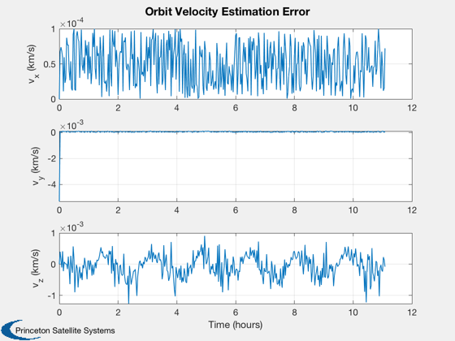
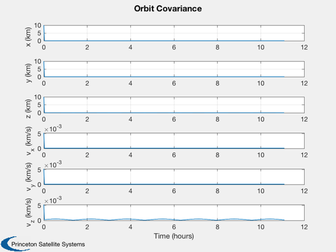
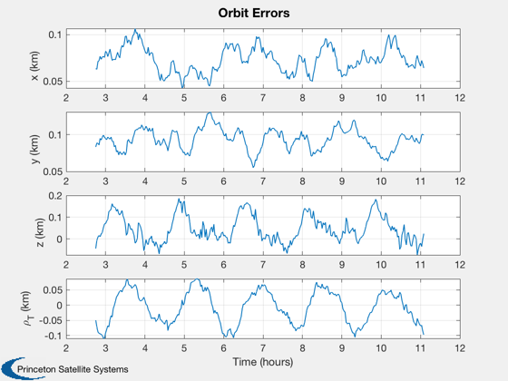

Contents
Demonstrate orbit estimation using UKFPredict and UKFUpdate.
The plots are the covariance, which goes to zero quickly, and the estimation errors. It uses GPS and single Doris range rate sensor.
See also KFInitialize, RK4, UKFPredict, UKFUpdate, RHSOrbitWithDisturbances, UKFWeight, MeasEarthTarget, MeasOrbitState
%-------------------------------------------------------------------------- % Copyright 2018 Princeton Satellite Systems, Inc. % All rights reserved. %-------------------------------------------------------------------------- % Since Version 2018.1 %--------------------------------------------------------------------------
Simulation parameters
nSim = 400; xP = zeros(19,nSim); rHSFunData = RHSOrbit; r = 7000; x = [r;0;0;0;sqrt(rHSFunData.mu/r);0]; dT = 100; % Position and velocity uncertainty rU = 10; vU = sqrt(rHSFunData.mu/r) - sqrt(rHSFunData.mu/(r+rU)); % State estimate at start m0 = [r+rU;0;0;0;sqrt(rHSFunData.mu/(r+rU));0]; % Covariance based on the uncertainty p0 = [rU^2;rU^2;rU^2;vU^2;vU^2;vU^2]; q0 = [0;0;0;1e-3;1e-3;1e-3]; % Plant noise noise1Sigma = 0.1*[1;1;1;1e-3;1e-3;1e-3]; noise1SigmaET = 0.0001; r0 = diag(noise1Sigma.^2); rET0 = diag(noise1SigmaET.^2); % Initialize the UKF ukf = KFInitialize( 'ukf','f',@RHSOrbit,'alpha',1,... 'kappa',0,'beta',2,'dT',dT,'fData',rHSFunData,... 'p',diag(p0),'q',diag(q0),'x',x,... 'm',m0); ukf = UKFWeight( ukf ); hData = struct('noise1Sigma',[0;0;0;0;0;0]); hDataSim = struct('noise1Sigma',noise1Sigma); hETData = MeasDoris; hETDataSim = hETData; hETDataSim.noise1Sigma = noise1SigmaET; [ukf.y(2).data, rT]= MeasDoris( x, hETDataSim );
Simulate
t = (0:(nSim-1))*dT; for k = 1:nSim % Plotting dRho = Mag(ukf.m(1:3) - rT) - Mag(x(1:3) - rT); xP(:,k) = [ukf.m; x; diag(ukf.p); dRho]; % Kalman Filter Prediction step ukf.t = t(k); ukf = UKFPredict( ukf ); % Update the RHS x = RK4( @RHSOrbit, x, dT, t(k), rHSFunData ); % GPS sensor ukf.y(1).data = MeasOrbitState( x, hDataSim ); ukf.y(1).param.hFun = @MeasOrbitState; ukf.y(1).param.hData = hData; ukf.y(1).param.r = r0; % Doris sensor [ukf.y(2).data, rT] = MeasDoris( x, hETDataSim ); ukf.y(2).param.hFun = @MeasDoris; ukf.y(2).param.hData = hETData; ukf.y(2).param.r = rET0; % Filter update step ukf = UKFUpdate( ukf ); end
Plot
[t,tL] = TimeLabl(t);
yL = {'x (km)' 'y (km)' 'z (km)' 'v_x (km/s)' 'v_y (km/s)' 'v_z (km/s)' '\rho_T (km)' };
dX = xP(1:6,:) - xP(7:12,:);
Plot2D( t, dX(4:6,:), tL, yL(4:6), 'Orbit Velocity Estimation Error' );
Plot2D( t, sqrt(xP(13:18,:)), tL, yL(1:6), 'Orbit Covariance' );
l = 100:length(t);
Plot2D( t(l), [dX(1:3,l);xP(19,l)], tL, yL([1:3 7]), 'Orbit Errors' );
%--------------------------------------
  